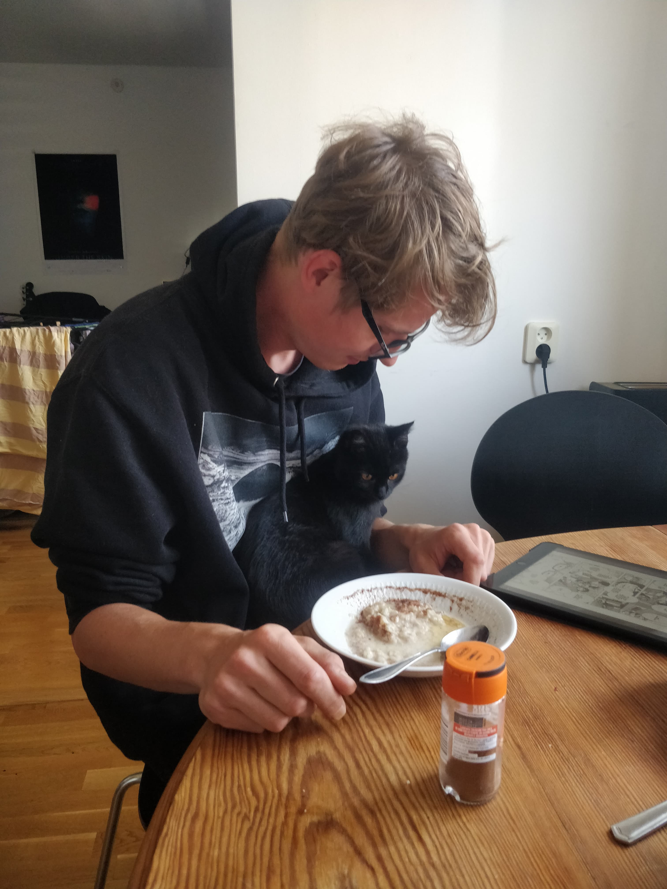

Före detta hemtjänstpersonal försöker hitta något annat att göra, har alltid gillat att pilla och pula med musik och datorer, gärna kombinerat. Jag gör aldrig klar någon musik, men vill ändå inte jobba med det så är nöjd med amatörlivet. Har bott i Milano i tre år, varav 2 under pandemin, så hade inte många äventyr under den tiden.
Helt okej kille
- Min mamma